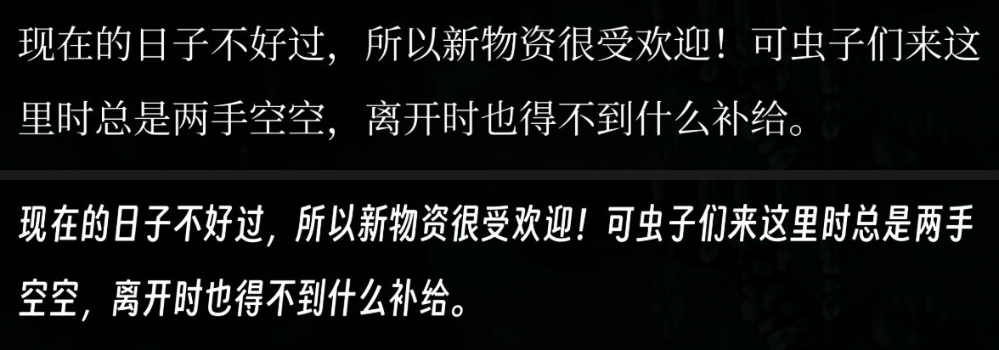

C2 字体：修复缺字方框
文本 · 面向创作者
文字显示成 □□□ 方框？在Fonts/_fallback/里放一个字体就能补上缺字。
想用你自己的字体？把它放进Fonts/ZH/（或default、JA……），就能替换对应语言的字体。
你将学会：用一个文件消灭“豆腐块”方框，替换某一种语言的字体，挑选合适的字体，看懂 [Font] 日志，并清楚知道这个功能会动到什么、不会动到什么。
两个文件夹，两种用途
| 文件夹 | 用途 | 会改变原版外观吗？ |
|---|---|---|
Fonts/_fallback/ | 补上所有已载入字体都没有的字符 | 不会 |
Fonts/<target>/ | 原地替换某一个字体 | 会，只影响那个字体 |
两者可以一起用。目标文件夹决定某个字体长什么样，后备文件夹则补上整条字体链上所有字体都缺的字符。
补全缺失字符（_fallback）
丝之歌的字体只覆盖游戏本身用到的字符。替换文本——比如带生僻字的中文汉化、日文，或者任何原版字体没收录的文字——可能会超出这个范围，这时 TextMeshPro 会把缺失的字符画成方框（玩家们俗称豆腐块）。
后备字体的修复方式是叠加式的：你的字体会追加到 TextMeshPro 的全局后备字体链末尾，只有游戏自己的字体缺少某个字形时，游戏才会去查这条链。原版字体已经覆盖的字符，外观和原版一模一样，一个像素都不会变。
把一个 .ttf 或 .otf 字体文件放到这里（放在你的资源包里，或者工作区文件夹的根目录下）：
{pack}/Fonts/_fallback/NotoSansCJKsc-Regular.otf整个流程就这么简单。载入时（以及热重载时——Stitchwork 会监视这个文件夹），Stitchwork 会扫描所有已载入的替换文本，找出游戏字体缺少的字符，只把这些字形从你的字体烘焙进一张图集，再注入后备字体链。游戏自身文本里的字符，会在游戏渲染它们时收集起来；其中所有已载入字体都没有的字符，会在第一次出现后一两秒内自动烘焙进去。
- 可以放多个字体（同一个资源包里可以，多个资源包之间也可以）——字体链按资源包的优先级顺序查找，所以两个字体都有的字符，由排在前面的资源包的字体来显示。
- 用哪个字体？只要覆盖了你需要的字符就行。中日韩（CJK）文字的话，社区常用的是 Noto Sans CJK 或 Source Han Sans（思源黑体）——两者都按 SIL Open Font License 免费发布，允许打包进资源包。其他字体在随包发布之前，请先确认它的许可证。
- 设置文件（
Fonts分区）里有：功能开关、字形字号，以及一个位图模式开关——如果后备字符显示出瑕疵，就把FontFallbackBitmapMode打开；这个模式更可靠，代价是字会稍微发虚一点。FontFallbackEnabled用来开启或关闭后备字体功能。它也就是设置 › 渲染里的后备字体开关。要打开设置，按0，或点击顶部标签页最右端的齿轮标签。FontFallbackPointSize（24–128，默认 64）设置烘焙字号。数值越大，大号文字越清晰，图集也越大。FontFallbackScale（0.5–1.5，默认 1.0）设置字形大小。CJK 字体放在游戏文字旁边可能显得偏大，可以试试 0.9。单个字体也可以有自己的缩放：在它的文件名里加@s标签，例如myfont@s0.85.ttf。
替换某种语言的字体（目标文件夹）
{pack}/Fonts/ZH/MyBrushFont.ttf文件夹名就是替换目标：
EN、FR、DE、ES、IT、PT、JA、RU、ZH、ZH_TW、KO——每种语言一个文件夹。ZH替换游戏在简体中文下显示的字体，FR替换游戏在法语下显示的字体。PT_BR和PT算同一种语言。default——英语、法语、德语、西班牙语、意大利语、葡萄牙语里，没有自己文件夹的语言都用这个字体。游戏用同一个共享字体来显示这六种语言：Stitchwork 会按屏幕上当前的语言，从对应的文件夹填充它；你切换语言时，它会重新烘焙一次（大约一秒）。在同一个资源包里，FR优先于default；不同资源包之间，排在上面的资源包生效。- 其他任何名字，都会拿去和字体资源的名称匹配。日志里
[Font] Live font assets这一行会列出这些名称、使用它们的槽位，以及它们的后备字体链。
替换之后
- 游戏字体原有的每个字符，都会用你的字体重新烘焙，字号和距离场扩散范围（spread）都沿用游戏原本的设置，行距也保持不变，所以描边和阴影的宽度不会变。不过字母的比例来自你的字体：大写字母更高、x 高度更大的字体，文字看起来会更大，一行字也可能折成更多行。没有任何设置能把替换字体缩小（文件名里的
@s标记只对_fallback有效）。请选用比例接近游戏字体的字体，或者先在字体编辑器里把字形缩小。 - 游戏字体本来没有的字符，只要你的字体里有，也会一并加进来：文本文件里的字符在第一次烘焙时加入，游戏渲染出来的文字则在出现时加入。新字符第一次出现后，大约两秒内就会补上；在那之前的一小会儿，它可能显示成方框，或者先用后备文件夹里的字体显示。
- 游戏原本的字体渲染会留在你的字体后面，作为后备。你的字体缺少的字符，只要原版字体或后备文件夹里的字体有，就会用它们显示。
- 有些字体是跟着场景一起载入的，菜单的标题字体就是一个。每次载入场景后，替换都会重新应用一次，所以启动时还没载入的字体，会在它所在的场景出现时换掉。

ZH 文件夹里的替换字体，字形更窄，一行能放下更多字。（Bonebottom › BB_FIXER_GENERIC）规则
- 一个目标文件夹里可以放多个字体，但只会用文件名排在最前面的那个。
- 两个资源包替换同一个槽位时，排在上面的资源包生效。在资源包管理器里，下面那个资源包的卡片会显示它被上面那个包“覆盖”，被覆盖折叠栏也会列出这个槽位和两个资源包的名字。
- 关闭资源包、删掉文件夹，或者把
FontReplaceEnabled设为 false，下次重新加载时，游戏字体就会回来。FontReplaceEnabled也就是设置 › 渲染里的资源包字体开关。拨动这个开关，会立即开始重新加载。 - SilksongFontsInject 和 CustomFontSilksong 也会写入同样的槽位。装了其中任何一个时，最后写入的那个生效，日志里会有警告。不要把它们和 Stitchwork 一起使用（见先移除这些模组）。
- 每次启动游戏后的第一次应用，会把被替换字体的每个字形都烘焙一遍，中文字体就有好几千个。所以应用的最后一步（正在收尾…）会停顿一秒左右，每次启动游戏、每个字体文件只会有一次。
[Font] Replaced这一行会记下用了多长时间。
看懂日志
[Font] Live font assets (N): …——当前载入的每个字体资源、使用它的语言槽位，以及它的后备字体链。这组字体资源有变化时才会打印。[Font] Target 'X' matches no live font asset yet——文件夹名既不是槽位名，也不是任何已载入字体资源的名称。常见原因是：字体压缩包直接解压到了Fonts/下面，于是它的文件夹名被当成了目标。把字体文件移进某个目标文件夹就好。[Font] Replaced 'asset' (target 'ZH') with 'file': N of M glyph(s) into SxS at P pt, spread D px, …——烘焙结果，附带耗时。[Font] Extended 'asset' by N glyph(s) (K not in font)——烘焙之后追加的新字符。[Font] Restored 'asset'——原版字体已经恢复。[Font] Injected N fallback font(s) …和Baked …——后备字体那条路径的日志。
做不到的事
- 替换后的字体保留它自己的字宽，但没有字偶距（kerning）：原版的字偶距配对不适合新的字形，新字体自带的字偶距也不会读取。
- 位图模式只用于后备字体。替换的字体始终用 SDF 方式烘焙。
- 替换的目标是字体，不是某个文本对象。所有用到这个字体的文字都会改变，没法只针对单个对象。
问题排查
- 还是方框？到日志里找
[Font]开头的行：有“Baked … N glyphs”，说明流程已经跑过了；出现“covered none of the needed codepoints”，则说明你的字体也没有这些字符——换 Noto 试试。 - 字体没变？找找
Replaced这一行。如果日志说目标没有匹配到任何已载入的字体资源，那就是文件夹名写错了（见上文）。如果有这一行，菜单却没变，就去Live font assets那一行里，查菜单用的是哪个字体资源。 - 删了文件，字体还在？烘焙结果不会写到硬盘上，只在这一次游戏期间留在内存里。请确认你删除的是总览面板显示的那个工作区文件夹里的文件（默认是
<Game folder>\Stitchwork\Fonts\<target>\），而不是某个旧的管理器档案下的文件夹。游戏发现文件被删掉后，日志会打印[Font] Restored。 - 资源包体检会指出两种常见问题：字体直接放在
Fonts/下（不会载入），以及文件夹里混进了不是字体的文件（会被跳过）。要运行体检，在资源包管理器里点击资源包卡片上的听诊器按钮（对此资源包进行体检）。它会生成报告并打开。
这还是个新功能。烘焙以 SDF 渲染为目标（任何字号下都清晰），后备字体还可以在设置文件里改用位图模式。如果你发现任何异常——间距不对、大字号下出现瑕疵、某个字符位置错了——请报告具体是哪个字符、出现在哪里；有了具体的字符，这类问题就很好排查。